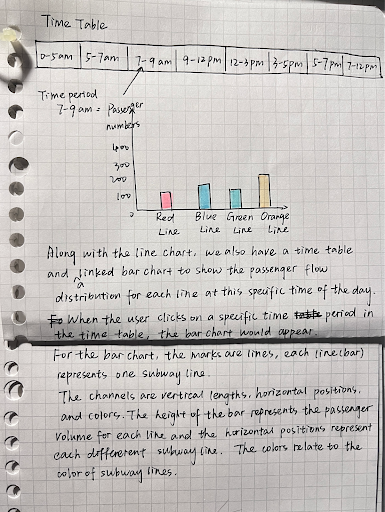
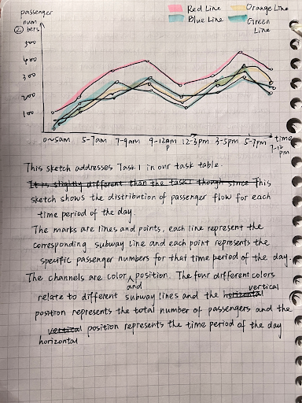
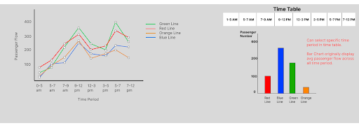

Danish Abbasi, Liulu Yue, Rongzi Xie, Wenxiao Wang
Project-long Course Project as part of COSI 116A: Information Visualization, taught by Prof. Dylan Cashman, Brandeis University.
Our project focuses on analyzing and visualizing ridership distribution for MBTA rails. Our motivation for tackling the problems addressed through our visualization is so that users can navigate the MBTA subway system more easily. This visualization showcases ridership distribution across time periods, directions, rails, and stations. Using various encoding channels like area, color, and position, we've developed an interactive linked visualization.
Its aim is to assist users in understanding passenger flow when using any transportation line at different time periods. The link node chart enables users to explore passenger flow details for each station, while the line and bar charts offer different perspectives—one highlighting time sensitivity and the other providing an overview of passenger flow across rail lines.
Embedded MP4 demo video using the HTML5 <video> tag. For example, this screen recording Prof. Cody Dunne made of Mike Bostock's flexible transitions in D3 slide:
See above in the demo video section for demonstration on our visualization.
The dataset used in this project is the MBTA Rail Ridership which can be found on the MBTA official website. This dataset provides a detailed overlook for ridership data cross all the MBTA lines. The dataset provides information for each specific stop on each line with information on the time of day each passenger boarded/disembarked the train as well as with the mean of total offs/total ons of passengers. Additionally, the data types for our dataset are: nominal, interval, and ordinal.
The steps for the data preprocessing were:
1. Convert dataset into JSON file and put into the data folder
2. Load it into Javascript file using fetch
3. For Barchart: Same steps, but for the specific data found it was calculated using line chart data and put into an array initially used to fill barchart data
Expectation: Data sources match the problem statement and are appropriate. These descriptions should be very explicit so someone could read your page and properly reproduce your results.
Our domain tasks for this project are as follows:
1. What is the estimated passenger flow distribution for each subway line at this time period of the day? (analytic task: summarize, search task: explore, analyze task: discover)
2. Utilizing a time table, how does the passenger flow distribution change throughout the different time periods of the day? (analytic task: summarize, search task: explore, analyze task: enjoy)
Goals for first domain task:
Goals for second domain task:
Early Sketches:
In the bar-graph sketch above, we chose to use lines for the marks and each bar(line) represents a subway line. The channels used are vertical lengths, horizontal positions, and colors. We chose to use vertical lengths so that the user could easily distinguish the passenger volume for each line and see which line has the least or greatest volume. Additionally, we chose horizontal positions to represent the different subway lines and colors to relate to the name of the subway lines.
In the line graph sketch above, we chose lines and points for the marks. We chose lines to represent each subway line and each point on the line to represent the different times in the day. Our design choice for this was so that the user can easily select the time period without having to specifically click on the time. The channels used are position and color, our justification for using these is the same for using it in our bar-graph sketch.
Final Sketch:
From our previous beginning sketches, our design choices remained consistent with what we described previously within our final sketch drawings (shown above). We kept the same channel and marks for both the line and bar graph and our justifications for both remain the same.
Through our visualization we were able to successfully visualize each MBTA line’s passenger flow at different times in the day (excluding the commuter rail lines). Additionally, we were able to successfully visualize it using a time-table linked with a line-chart and bar-graph so that the user could see specific trends amongst each line. Due to time constraints, we were not able to implement every station on each line as well as the commuter railway lines, however, for future work/improvements, our project could definitely implement all the commuter rail lines and as well all the stations on each line.
List here where any code, packages/libraries, text, images, designs, etc. that you leverage come from.